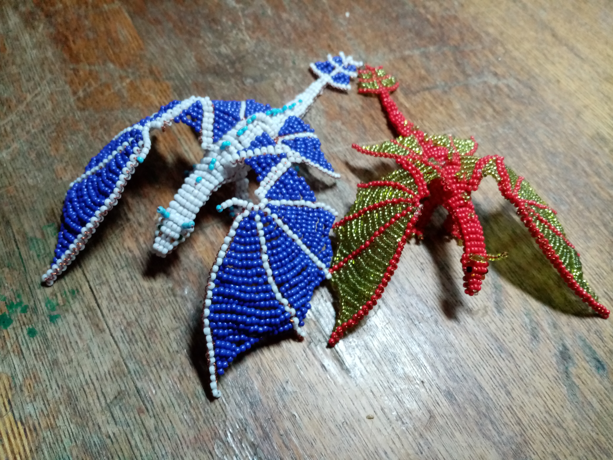
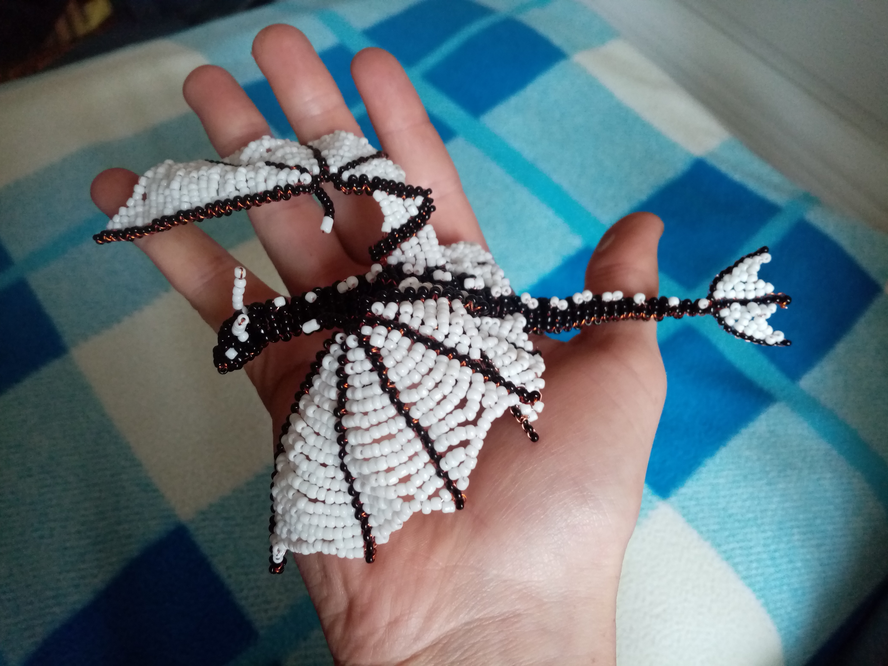
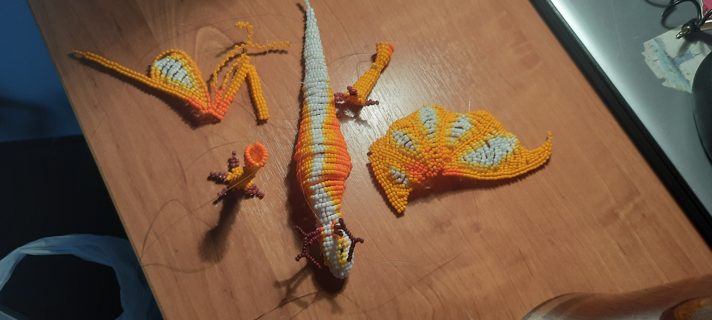
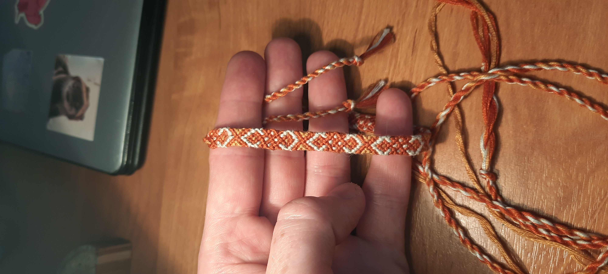
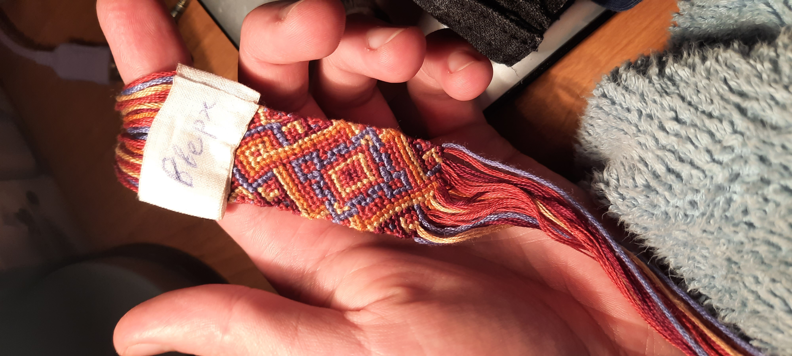
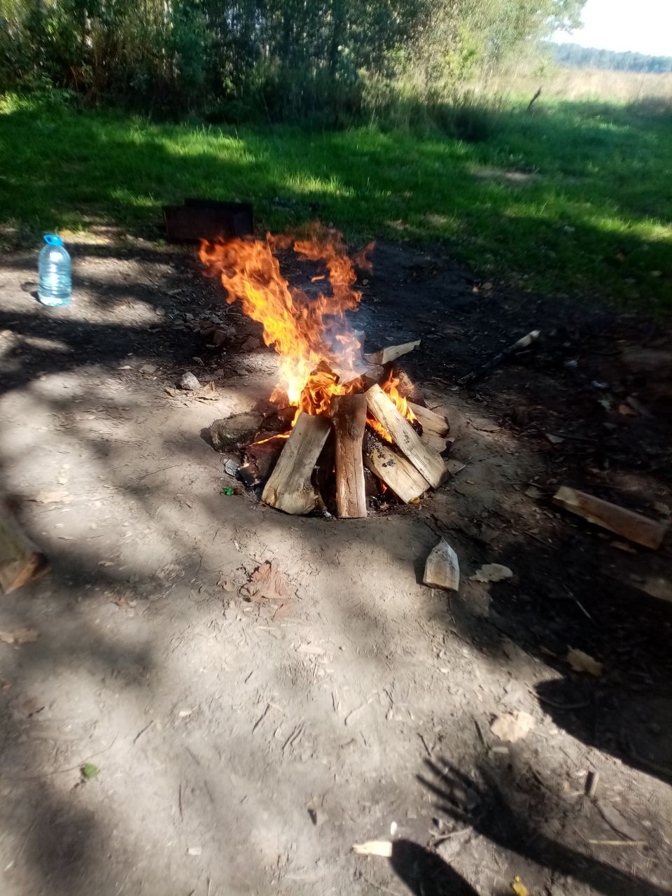
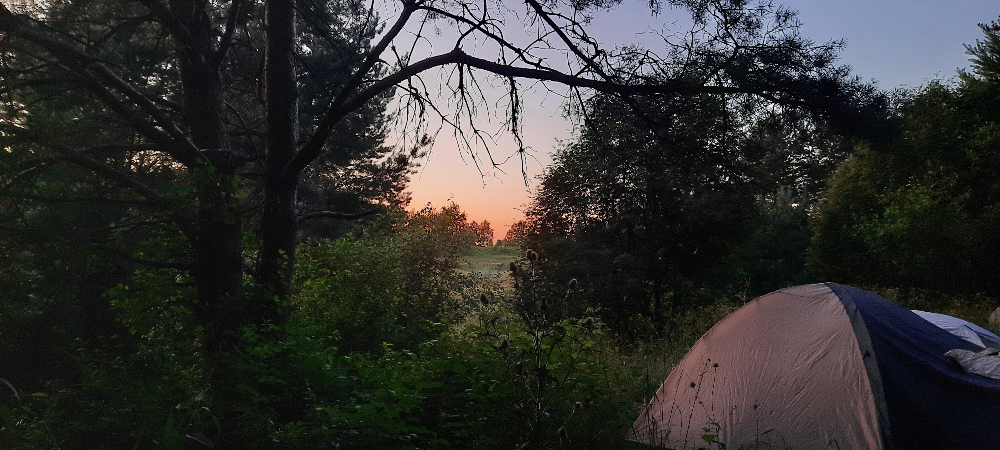
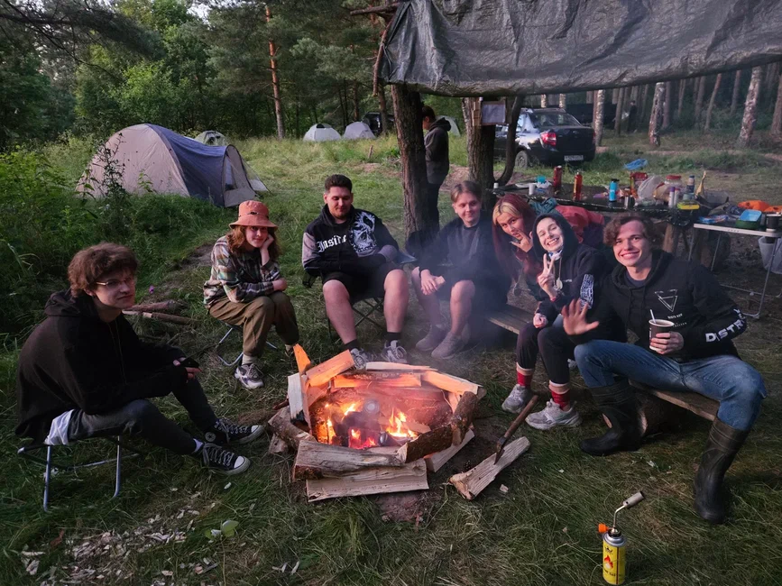
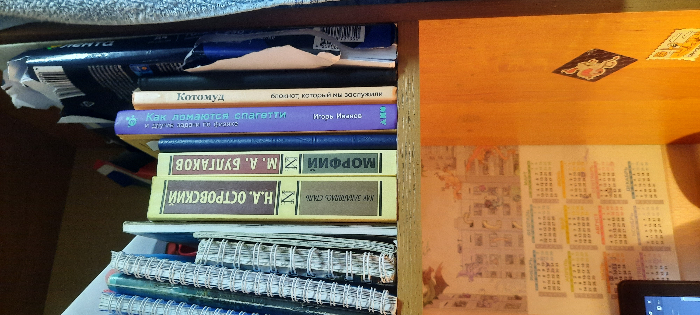

Рукодельничество
    Рукодельничество всегда долгий и спокойный процесс,
на фон обычно какой-нибудь фильм или сериал ставлю.
Правда занимаюсь очень редко этим.
Почему нравится:
- Медитативность
- Приятно такое дарить
- Хотя бы какое-то творческое увлечение в учебной рутине
Выезды в лес
  Давно катаюсь в лес на два-три дня, была даже традиция с близкими и друзьями каждое лето ездить.
Последние разы были с мероприятиями от старшекурсников.
Именно выезды, а не походы, потому что всегда просто до определённого места добирались,
не заходя глубоко в лес. Благодарен родителям, что познакомили с этим крутым хобби.
Почему увлекаюсь:
- Отдых от городской суеты и шума
- Всегда было связано с приятными воспинаниями
- Много душевных разговоров
- Лучше чем поход к психологу
Чтение книг
 Читаю очень редко, и поэтому прочёл не так много как хотелось бы,
и список отложенных всё растёт и растёт.
Из примеров, мною прочитано "Голодные игры", "АРЕАЛ", дальше не помню.
Сейчас читаю "Морфий", "Новый завет".
Почему интересно:
- Спокойное времяпровождение
- Небольшое саморазвитие
- Приятно отвлечься от рутины